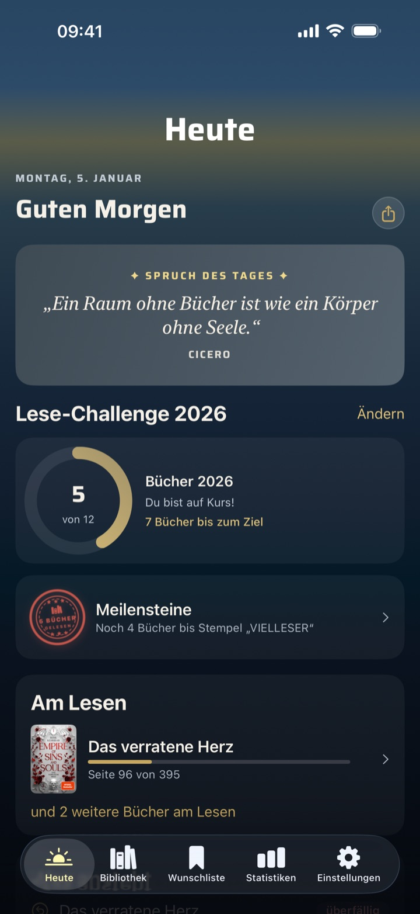
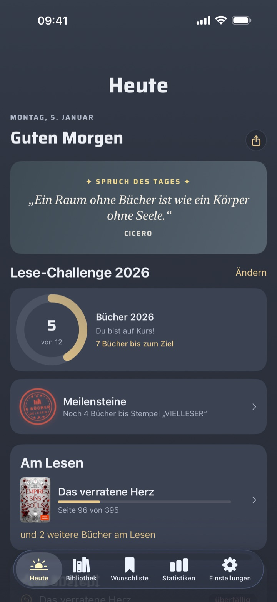
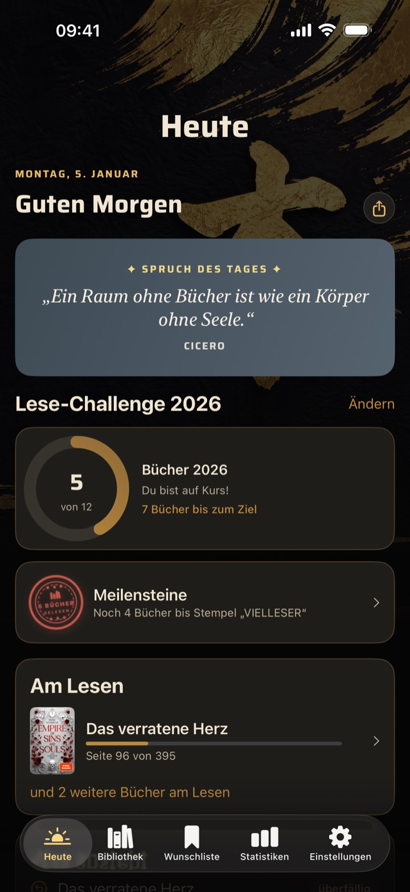
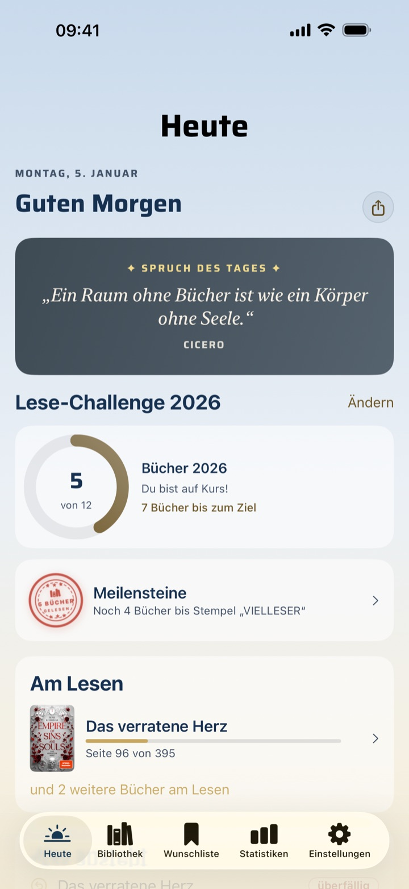
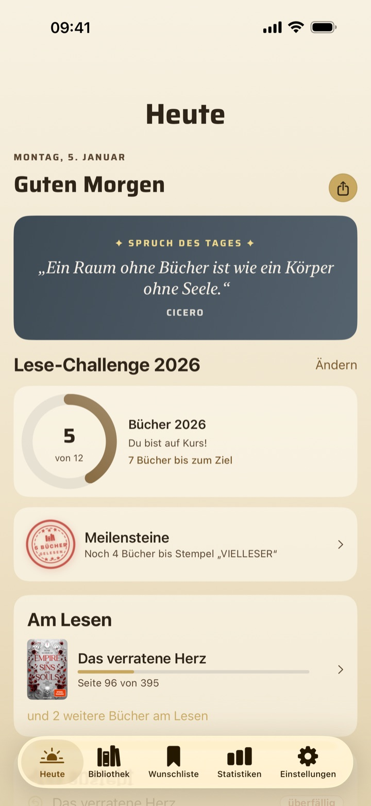
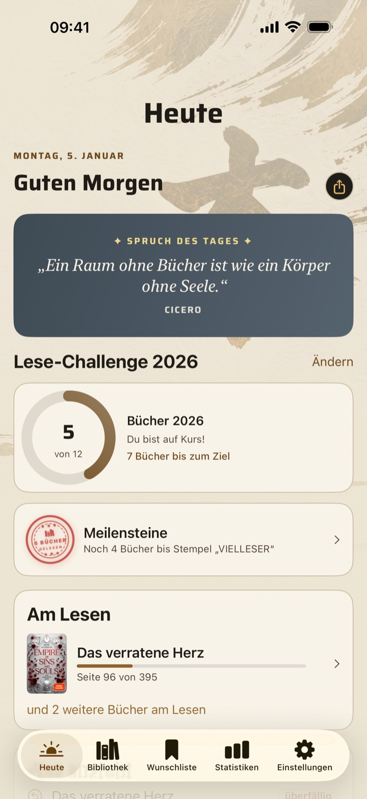

Worum es in diesem Update geht
BookSafe 1.14 bringt drei Farbschemen zur Wahl, jedes hell und dunkel, und macht das Wiederlesen vollständig: BookSafe fragt nach, bevor ein gelesenes Buch zurückgesetzt wird, und zeigt, wie oft du es gelesen hast.
Dieselbe Version 1.14 liegt auch bei Google Play, seit dem 27. November 2026. Auf Android gibt es Booky als einziges Farbschema; die Auswahl zwischen Booky, Nordic und Kintsugi gibt es nur auf iPhone und iPad. Widgets und die Uhr gibt es auf Android nicht.
Diese Seite beschreibt die Änderungen ausführlicher, als es in die Versionshinweise im App Store passt.
Version 1.14 · im App Store und bei Google Play seit 27. November 2026
Neu
1Farbschemen
Wähle in den Einstellungen unter „Farbschema“ zwischen Booky, Nordic und Kintsugi — jedes mit eigenem hellen und dunklen Design. Booky ist der neue Standard, mit besser lesbaren Farben bei Tag und bei Nacht. Die Farbschemen sind kostenlos.






2„Buch erneut lesen?“
Setzt du ein gelesenes oder gehörtes Buch wieder auf „Am Lesen“ oder „Ungelesen“, fragt BookSafe jetzt, ob du es erneut liest oder hörst. Deine erste Lesung bleibt erhalten und zählt weiter. War es nur ein Versehen, bleibt alles, wie es war.
3Wie oft gelesen
Wie oft du ein Buch gelesen hast, steht jetzt in der Bibliothek und im Buchdetail („Gelesen · 2ד). Im Buch siehst du die Sitzungen je Lesedurchgang, auf Heute steht beim laufenden Buch der Durchgang, und unter Statistiken werden deine wiedergelesenen Bücher gezählt.
Verbessert
- Das helle Design ist durchgehend überarbeitet, mit mehr Kontrast
- Im Buchdetail passt sich die Abdunklung über dem Cover dem jeweiligen Bild an, damit Text darauf lesbar bleibt
Dazu viele weitere Detailverbesserungen.
Ältere Versionen
Was BookSafe seit Version 0.4 dazugelernt hat — vom Ausleih-Tracker über iCloud-Sync und die Apple Watch bis zu den Filmen im Jahresrückblick —, steht gesammelt im Archiv. Die vorige Version, 1.13, steht dort ebenfalls. Zusammen zeigen die Versionen, was die App heute alles kann.
Zum Archiv der älteren Versionen →Gut zu wissen
| Voraussetzung | iPhone und iPad ab iOS 18, Apple Watch ab watchOS 11. Android bei Google Play, ohne Widgets und ohne Uhr |
|---|---|
| Deine Daten | Auf iPhone und iPad: kein Konto, kein Tracking, Abgleich über deine private iCloud. Auf Android liegt die Bibliothek auf dem Gerät. Pro gilt nicht plattformübergreifend. |
| Preis | Kostenlos bis 50 Bücher. BookSafe Pro: einmalig 3,99 € im App Store bzw. 3,99 € bei Abrechnung über Google Play, kein Abo. Ein Kauf gilt nur für die Plattform, auf der du ihn abgeschlossen hast. |
| Update | Auf dem iPhone über den App Store, auf Android über Google Play. |